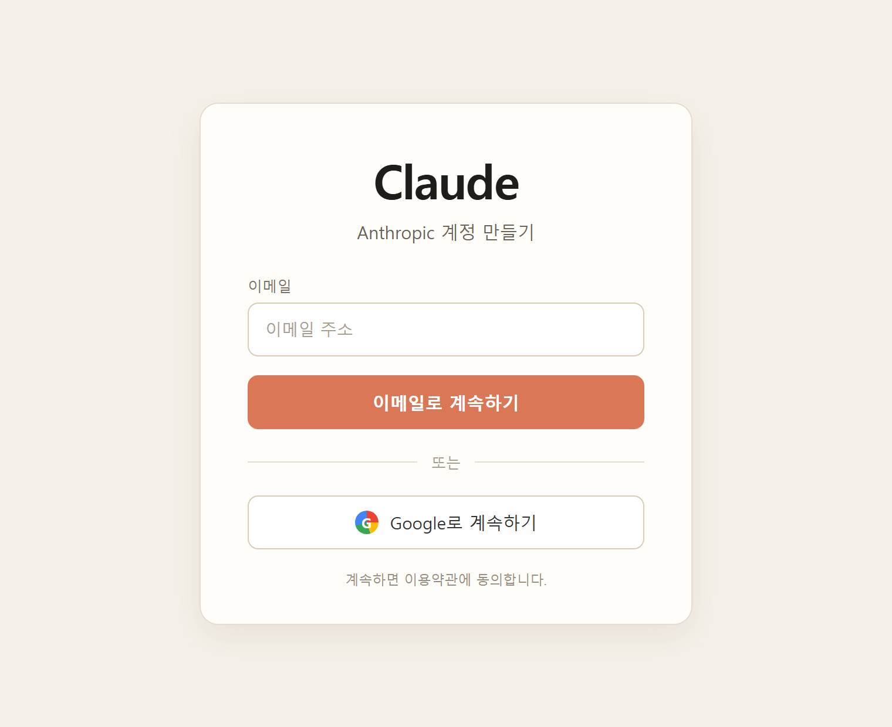
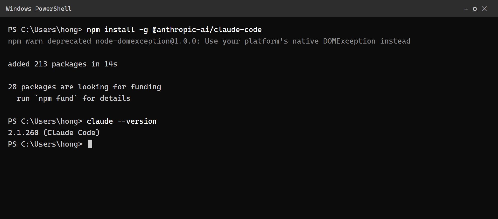
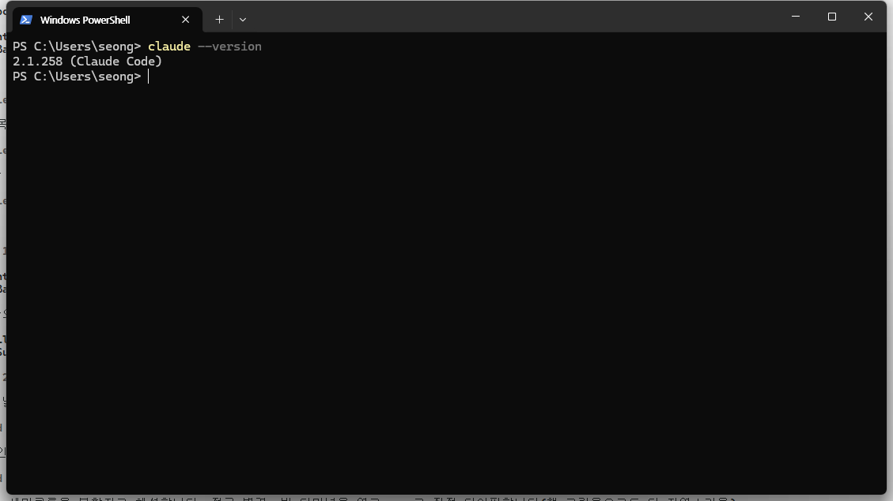
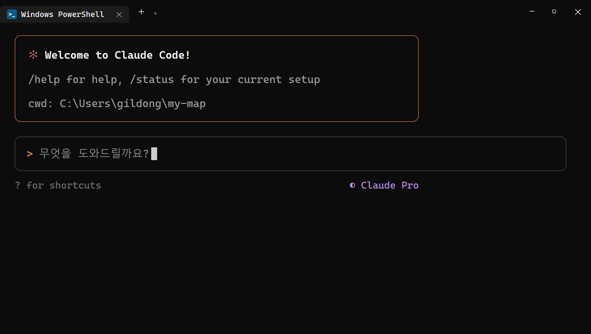
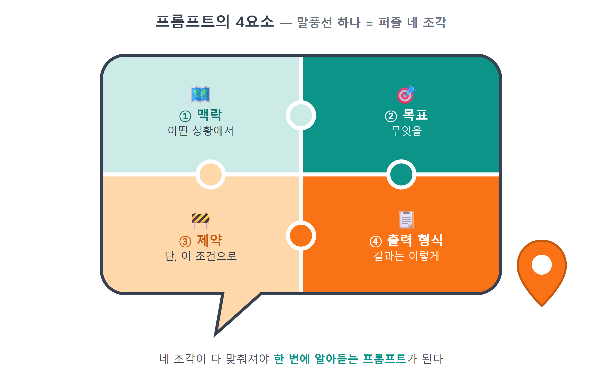
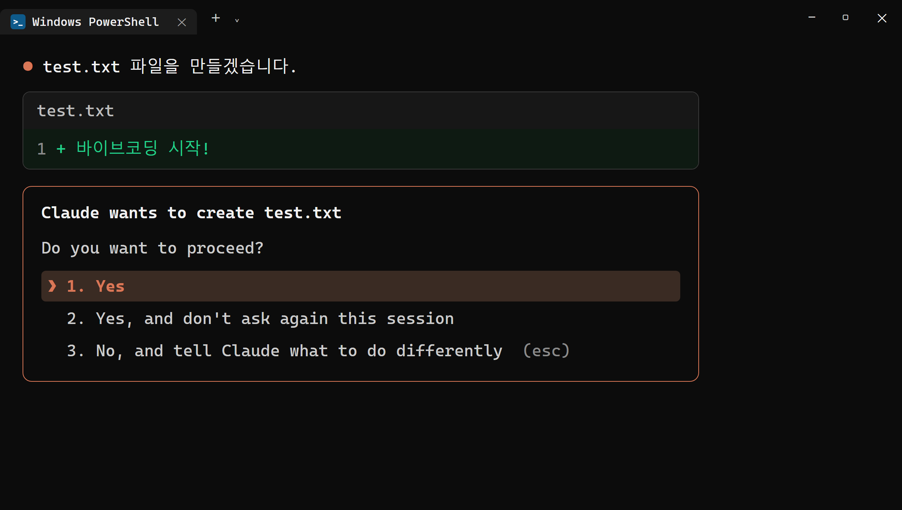

4장 Claude Code 설치하고 길들이기¶
이 장에서 배우는 것
- Claude 계정을 만들고 Pro 플랜을 준비하는 방법
- npm으로 Claude Code를 설치하고 첫 실행·로그인까지 마치는 방법
- 좋은 프롬프트의 4요소 — 맥락·목표·제약·출력 형식
- 권한 프롬프트가 뜨는 이유와 안전하게 허용하는 기준
4.1 드디어 주인공 등장 — Claude Code란¶
2장에서 Node.js를, 3장에서 Git을 설치했습니다. 무대는 다 갖춰졌습니다. 이제 이 책의 주인공, Claude Code를 데려올 차례입니다.
Claude Code는 Anthropic이 만든 터미널에서 동작하는 AI 코딩 에이전트입니다. 챗봇에게 질문하고 답을 복사해 오는 방식이 아닙니다. Claude Code는 여러분의 프로젝트 폴더 안에 직접 들어와서 파일을 읽고, 코드를 쓰고, 명령을 실행하고, 에러가 나면 스스로 고칩니다. 여러분이 "지도를 화면에 띄워줘"라고 말하면, 어떤 파일을 만들어야 하는지 스스로 판단해서 만들어 줍니다.
복사-붙여넣기가 없습니다. 이게 핵심입니다.
챗봇으로 코딩을 해 본 분이라면 이런 경험이 있을 겁니다. 코드를 받아서 붙여넣었는데 에러가 나고, 에러 메시지를 다시 복사해서 챗봇에게 보여주고, 고친 코드를 또 붙여넣고… 이 왕복 배달이 바이브코딩의 가장 큰 병목이었습니다. Claude Code는 이 배달 일을 통째로 없앱니다. 에러가 나면 자기가 읽고 자기가 고칩니다. 여러분은 방향만 잡아주면 됩니다.
이런 방식으로 일하는 프로그램을 에이전트(agent)라고 부릅니다. 질문에 답만 하는 게 아니라, 목표를 받으면 계획을 세우고, 도구를 골라 쓰고, 중간 결과를 확인하면서 스스로 다음 행동을 결정하는 프로그램이라는 뜻입니다. 1장에서 "에이전트에게 일 시키는 마음가짐"을 이야기했는데, 그 에이전트가 바로 이 녀석입니다. 여러분의 역할은 코더가 아니라 일 시키는 사람입니다. 무엇을 만들지 정하고, 진행 상황을 확인하고, 방향이 틀어지면 바로잡는 것. 회사로 치면 신입 개발자를 옆자리에 앉힌 팀장의 역할에 가깝습니다.
이 책의 나머지 전부 — 지도를 띄우고, 마커를 찍고, 검색을 붙이고, 배포하는 일 — 는 이 도구에게 시켜서 진행합니다. 그러니 이번 장에서 설치만 하고 끝내지 않고, 어떻게 말을 걸어야 일을 잘하는지까지 함께 배웁니다. 도구를 길들이는 장입니다.
4.2 계정 만들기와 Pro 플랜¶
Claude Code를 쓰려면 Claude 계정이 필요합니다. 아직 없다면 지금 만들어 봅시다.
- 브라우저에서 claude.ai 에 접속합니다.
- 구글 계정으로 가입하거나 이메일 주소로 가입합니다. 이메일로 가입하면 인증 메일이 오니 받은편지함을 확인해 주세요.
- 가입이 끝나면 채팅 화면이 열립니다. 이 계정 하나로 웹의 Claude와 터미널의 Claude Code를 모두 씁니다.

가입할 때 쓴 이메일 주소는 잘 기억해 두세요. 잠시 뒤 터미널에서 로그인할 때 같은 계정을 씁니다. 계정이 두 개면 "분명 결제했는데 왜 안 되지?" 하는 미궁에 빠지기 쉽습니다.
다음은 플랜입니다. 무료 플랜으로도 Claude와 대화할 수 있지만, Claude Code를 본격적으로 쓰려면 Pro 플랜(월 20달러 수준)을 권합니다. 이 책의 실습은 Pro 플랜 기준으로 진행합니다. 화면 왼쪽 아래 프로필 → 설정에서 플랜을 업그레이드할 수 있습니다.
"책 한 권 따라 하자고 유료 결제까지?"라는 생각이 들 수 있습니다. 솔직하게 말씀드리면, 이 20달러가 이 책 전체에서 가장 가성비 좋은 투자입니다. 지도 앱 하나를 처음부터 끝까지 만들면서 여러분 옆에 붙어 있는 개발자를 한 달 고용하는 비용이라고 생각해 주세요. 그래도 결제가 부담스럽다면, 이 장 끝의 무료 대안 박스를 참고하세요. 책의 흐름은 다른 도구로도 따라올 수 있습니다.
⚠️ 주의
Pro 플랜에도 사용량 한도가 있습니다. 일정 시간 안에 쓸 수 있는 양이 정해져 있어서, 아주 긴 작업을 쉬지 않고 시키면 "한도에 도달했다"는 안내와 함께 잠시 기다려야 할 수 있습니다. 고장이 아니니 당황하지 마세요. 안내된 시간이 지나면 다시 쓸 수 있습니다. 이 책의 실습 분량은 Pro 한도 안에서 여유 있게 소화됩니다.
4.3 설치 — 명령어 한 줄이면 됩니다¶
2장에서 Node.js를 설치할 때 npm이 함께 깔렸다고 했던 것, 기억나시나요? npm이 드디어 첫 임무를 수행합니다. 터미널(Windows Terminal 또는 PowerShell)을 열고 아래 한 줄을 입력하세요.
명령어를 뜯어보면 이렇습니다.
npm install— 패키지를 설치하라.-g— global(전역)의 약자. 지금 폴더만이 아니라 컴퓨터 어디서든 쓸 수 있게 설치하라는 뜻입니다. Claude Code는 앞으로 모든 프로젝트에서 부를 도구니까 전역으로 설치합니다.@anthropic-ai/claude-code— 패키지 이름.@anthropic-ai/는 Anthropic 팀이 배포한 공식 패키지라는 소속 표시입니다.
잠시 진행 막대가 지나가고 몇 줄의 로그가 출력되면 설치 끝입니다.

잘 설치됐는지 확인해 봅시다. Node.js 때 node -v로 확인했던 것과 똑같은 요령입니다.
버전 번호가 출력되면 성공입니다. 참고로 Claude Code는 업데이트가 아주 잦은 도구입니다. 새 기능이 매주 쏟아지다시피 하죠. 나중에 책의 화면과 여러분의 화면이 조금 다르더라도 놀라지 마세요. 큰 흐름 — 설치하고, 실행하고, 말로 시키고, 승인하는 구조 — 는 변하지 않습니다. 최신 버전으로 올리고 싶을 때는 설치 때와 똑같은 명령을 한 번 더 실행하면 됩니다.

💡 팁
claude를 입력했는데 "명령을 찾을 수 없습니다"라는 에러가 나면, 십중팔구 터미널을 새로 열면 해결됩니다. 설치 직후에는 기존 터미널 창이 새 명령어의 위치를 아직 모르는 경우가 있거든요. 2장의 PATH 이야기와 같은 원리입니다. 새 창에서도 안 되면 npm install -g @anthropic-ai/claude-code를 한 번 더 실행해 보세요.
4.4 첫 실행과 로그인¶
이제 실행해 봅시다. 연습용 폴더를 하나 만들고 그 안에서 실행하겠습니다. Claude Code는 실행한 폴더를 자기 작업실로 삼기 때문에, 아무 데서나 실행하기보다 프로젝트 폴더 안에서 실행하는 습관을 처음부터 들이는 게 좋습니다.
mkdir은 폴더를 만드는 명령, cd는 그 폴더로 이동하는 명령입니다. 마지막 줄의 claude가 Claude Code를 실행합니다.
처음 실행하면 몇 가지 초기 설정 화면이 나옵니다. 화면 테마를 고르는 정도의 가벼운 질문이니 마음에 드는 것을 선택하면 됩니다. 그다음이 중요한 단계, 로그인입니다. 로그인 방법을 묻는 화면에서 Claude 구독 계정(Pro 플랜)으로 로그인하는 항목을 선택하세요. 그러면 브라우저가 자동으로 열리면서 claude.ai 인증 페이지로 이동합니다. 4.2절에서 만든 계정으로 로그인하고 승인 버튼을 누르면, 터미널로 돌아와 "로그인 완료" 안내를 볼 수 있습니다.

로그인이 끝나면 입력창이 깜빡이는 대화 화면이 나타납니다. 여기가 앞으로 이 책 내내 머물게 될 곳입니다. 인사부터 건네 볼까요.
🗣 이렇게 시키세요
안녕! 이 폴더에 hello.txt 파일을 만들고, 그 안에 "바이브코딩 시작!"이라고 써줘.
Claude Code가 잠시 생각하더니, 파일을 만들어도 되는지 허락을 구하는 화면을 보여줄 겁니다(이 화면의 의미는 4.6절에서 자세히 다룹니다). 허용을 선택하면 파일이 만들어지고, 탐색기로 폴더를 열어 보면 진짜로 hello.txt가 생겨 있습니다. 방금 여러분은 코드를 한 줄도 안 치고 컴퓨터에게 파일을 만들게 했습니다. 사소해 보여도, 이것이 바이브코딩의 첫 걸음입니다.
내친김에 하나 더 시켜 봅시다. 이번에는 만들기가 아니라 물어보기입니다.
🗣 이렇게 시키세요
방금 무슨 일을 했는지, 그리고 이 폴더에 지금 어떤 파일이 있는지 정리해서 알려줘.
Claude Code가 폴더를 살펴보고 현재 상황을 요약해 줍니다. 이 사용법을 꼭 기억해 두세요. 앞으로 코드가 이해되지 않을 때마다 "이 코드가 무슨 뜻인지 설명해줘", "왜 이렇게 짰어?"라고 물어보는 것이 이 책의 학습 방식입니다. 1장에서 말한 "코드를 이해하려 노력하되 외우지 않는다"는 철학은, 궁금할 때마다 바로 옆의 AI에게 물어볼 수 있기에 가능한 것입니다. 설명 요청은 파일을 바꾸지 않으니 권한 프롬프트도 뜨지 않습니다. 부담 없이, 마음껏 물어보세요.
대화를 끝내고 싶으면 /exit를 입력하거나 Ctrl+C를 두 번 누르면 됩니다. 다시 시작하고 싶으면 그 폴더에서 claude를 다시 실행하면 됩니다.
💡 팁
입력창에 /를 입력하면 슬래시 명령어 목록이 열립니다. 지금 다 외울 필요는 없고, /exit(종료), /clear(대화 초기화), /help(도움말) 세 개만 기억해 두세요. 나머지는 필요할 때마다 책에서 하나씩 소개합니다.
4.5 길들이기 — 프롬프트의 4요소¶
설치는 끝났습니다. 이제 이 장의 진짜 핵심, 말 거는 법입니다.
Claude Code는 유능하지만 독심술사는 아닙니다. 같은 일을 시켜도 어떻게 말하느냐에 따라 결과가 크게 달라집니다. 음식점에서 "맛있는 거 주세요"라고 주문하면 뭐가 나올지 알 수 없지만, "덜 맵게, 국물 많이, 계란 추가"라고 주문하면 원하는 음식이 나오는 것과 같은 이치입니다. AI에게 건네는 이런 주문서를 프롬프트(prompt)라고 부릅니다. 다행히 좋은 프롬프트에는 공식이 있습니다. 딱 네 가지만 기억하세요. 맥락, 목표, 제약, 출력 형식입니다.

하나씩 살펴봅시다. 예시는 전부 우리가 만들 지도 앱에서 가져왔습니다.
① 맥락(Context) — 지금 어떤 상황인지 알려주기. Claude Code는 폴더 안의 파일을 읽을 수 있지만, 여러분 머릿속 사정까지는 모릅니다. 프로젝트가 무엇인지, 지금 어디까지 왔는지 한 줄이라도 깔아주면 정확도가 크게 오릅니다.
- 나쁜 예: "지도 띄워줘." (어떤 지도? 무슨 프로젝트에서?)
- 좋은 예: "카카오지도 JS SDK를 쓰는 Vite 바닐라 JS 프로젝트야. 지금 빈 페이지 상태고, 여기에 지도를 띄우고 싶어."
② 목표(Goal) — 원하는 결과를 구체적으로. "잘 만들어줘"는 목표가 아닙니다. 완성된 모습이 눈에 그려지게 말해야 합니다.
- 나쁜 예: "마커 기능 추가해줘."
- 좋은 예: "장소 데이터에 있는 맛집 5곳에 마커를 찍고, 마커를 클릭하면 가게 이름이 말풍선으로 뜨게 해줘."
③ 제약(Constraints) — 하지 말아야 할 것, 지켜야 할 것. 이 요소가 초보와 고수를 가릅니다. AI는 시키지 않으면 종종 과잉 친절을 부립니다. 파일을 왕창 만들거나, 안 쓰는 라이브러리를 설치하거나, 멀쩡한 코드를 갈아엎기도 합니다. 울타리를 쳐 주세요.
- 예: "라이브러리는 새로 설치하지 말고, mapView.js 파일 하나만 수정해줘."
- 예: "지도 키는 코드에 직접 쓰지 말고 .env에서 읽어줘."
④ 출력 형식(Output) — 결과를 어떤 모양으로 받을지. 코드만 필요한지, 설명도 필요한지, 확인 방법까지 알려줬으면 하는지 미리 말해 두면 대화가 짧아집니다.
- 예: "바뀐 부분만 보여주고, 왜 그렇게 했는지 한 줄씩 설명해줘."
- 예: "다 만들면 브라우저에서 확인하는 방법을 알려줘."
네 요소를 전부 합치면 이런 프롬프트가 됩니다.
🗣 이렇게 시키세요
카카오지도 JS SDK를 쓰는 Vite 바닐라 JS 프로젝트야. (맥락) 장소 데이터의 맛집 5곳에 마커를 찍고, 클릭하면 가게 이름 말풍선이 뜨게 해줘. (목표) 새 라이브러리 설치는 하지 말고 mapView.js만 수정해. (제약) 바뀐 부분만 보여주고 한 줄씩 설명해줘. (출력 형식)
배운 것은 바로 써 봐야 남습니다. hello-claude 폴더에서 4요소를 갖춘 프롬프트를 직접 실험해 봅시다.
🗣 이렇게 시키세요
여기는 연습용 폴더야. (맥락) 내가 좋아하는 장소 세 곳의 이름과 한 줄 소개를 담은 places.txt 파일을 만들어줘. (목표) 파일은 하나만 만들고, 내용은 한국어로 써. (제약) 다 만들면 파일 내용을 보여줘. (출력 형식)
그리고 비교를 위해 대화를 /clear로 초기화한 뒤, 이번에는 일부러 뭉툭하게 "장소 파일 만들어줘"라고만 시켜 보세요. AI가 어떤 장소를, 어떤 형식으로 만들지 자기 마음대로 정하는 모습을 보게 될 겁니다. 결과가 나쁘다는 게 아니라, 여러분이 원한 결과가 아닐 확률이 높다는 게 문제입니다. 프롬프트가 구체적일수록 AI의 추측이 줄어들고, 추측이 줄어들수록 다시 시키는 횟수가 줄어듭니다. 같은 일을 두 번 시키지 않는 것, 그것이 좋은 프롬프트의 실질적인 이득입니다.
매번 네 요소를 논문 쓰듯 갖출 필요는 없습니다. "오타 고쳐줘" 같은 잔심부름은 한 줄이면 충분합니다. 하지만 결과물이 마음에 안 들 때, 프롬프트를 다시 보면 십중팔구 네 요소 중 하나가 빠져 있습니다. 그때 이 공식을 꺼내 점검하세요. 앞으로 이 책의 모든 "🗣 이렇게 시키세요" 박스는 이 공식 위에서 쓰였습니다. 박스를 읽을 때마다 "맥락은 어디고 제약은 어디지?" 하고 분해해 보면, 책이 끝날 무렵에는 프롬프트가 몸에 배어 있을 겁니다.
💡 팁
1장에서 말한 "작게 시키기"를 잊지 마세요. 네 요소를 갖춰도 "지도 앱 전부 다 만들어줘"처럼 목표가 거대하면 결과를 확인하고 되돌리기 어렵습니다. 한 번에 한 걸음씩 — 지도 띄우기, 그다음 마커, 그다음 말풍선 — 이 리듬이 바이브코딩의 정석입니다.
4.6 안전하게 쓰기 — 권한 프롬프트 읽는 법¶
4.4절에서 파일 하나 만드는데도 Claude Code가 허락을 구했던 것, 기억하시죠? 이 권한 프롬프트는 귀찮은 절차가 아니라 Claude Code의 가장 중요한 안전장치입니다.
Claude Code는 여러분의 컴퓨터에서 실제로 파일을 고치고 명령을 실행하는 도구입니다. 강력한 만큼, 잘못된 지시 한 번이 실제 피해로 이어질 수 있습니다. 그래서 Claude Code는 파일을 새로 만들거나 수정할 때, 그리고 명령어를 실행할 때 먼저 계획을 보여주고 여러분의 승인을 기다립니다. "이 파일을 이렇게 고치겠습니다. 해도 될까요?" 하고 묻는 것이죠.

허용 여부를 판단하는 기준은 간단합니다.
- 파일 만들기·수정: 대상 파일이 내 프로젝트 폴더 안이고, 보여준 변경 내용이 내가 시킨 일과 맞으면 허용합니다.
- 명령 실행: 무슨 명령인지 대충이라도 읽어 봅니다.
npm install(패키지 설치),npm run dev(개발 서버 실행)처럼 이 책에서 배운 명령이면 안심하고 허용해도 됩니다. - 모르겠으면 물어보기: 승인하기 전에 "이 명령이 뭐 하는 건지 먼저 설명해줘"라고 입력하면 됩니다. Claude Code는 설명해 주고 다시 물어봅니다. 모르는 것을 승인하지 않는 습관, 이것 하나면 충분히 안전합니다.
반대로, 이런 경우에는 잠깐 멈추고 의심해 보세요. 시킨 적 없는 파일을 지우겠다고 할 때, 프로젝트 폴더 바깥의 경로를 건드리려 할 때, 처음 보는 프로그램을 설치하겠다고 할 때. 이럴 때는 거절해도 아무 문제가 없습니다. 거절하면 Claude Code는 "알겠습니다" 하고 다른 방법을 제안하거나 이유를 설명해 줍니다. 거절이 대화를 망치지 않습니다. 오히려 "그 파일은 지우지 말고 다른 방법을 찾아봐"처럼 거절 뒤에 방향을 덧붙이면, 그것이 곧 4.5절에서 배운 '제약'을 추가하는 일이 됩니다.
매번 묻는 게 번거로워지면 "이번 세션 동안 같은 종류는 허용" 같은 선택지로 반복 승인을 줄일 수 있습니다. 다만 처음 몇 주는 하나하나 읽으면서 허용하기를 권합니다. 승인 화면을 읽는 것 자체가 훌륭한 공부거든요. AI가 어떤 파일을 왜 고치는지 어깨너머로 보는 셈이니까요.
⚠️ 주의
권한 확인을 아예 꺼 버리는 옵션도 존재하지만, 이 책을 따라 하는 동안은 절대 끄지 마세요. 안전벨트는 사고가 나기 전까지는 늘 거추장스러운 법입니다. 그리고 3장에서 설치한 Git이 두 번째 안전벨트라는 것도 잊지 마세요. 커밋해 둔 상태라면 AI가 무슨 짓을 해도 되돌릴 수 있습니다.
🔎 무료 대안 — 꼭 Claude Code가 아니어도 됩니다
Pro 결제가 어렵다면 비슷한 터미널 AI 도구로 책을 따라올 수 있습니다. 프롬프트 4요소는 어느 도구에서나 통합니다.
opencode— 오픈소스 터미널 코딩 에이전트. 여러 AI 모델을 골라 연결할 수 있고 무료 모델 조합도 가능합니다.codex— OpenAI의 터미널 코딩 에이전트. ChatGPT 계정으로 사용합니다.antigravity— 구글의 AI 코딩 도구. 구글 계정으로 무료 사용이 가능합니다.
단, 이 책의 화면·명령어 설명은 Claude Code 기준이라 세부 조작은 조금씩 다를 수 있습니다.
4.7 마무리¶
📌 핵심 요약
- Claude Code는 터미널에서 파일을 직접 읽고 쓰고 실행하는 AI 코딩 에이전트로, 복사-붙여넣기 왕복이 없습니다.
- 설치는
npm install -g @anthropic-ai/claude-code한 줄, 확인은claude --version입니다. - 프로젝트 폴더 안에서
claude를 실행하고, 브라우저 인증으로 Pro 계정과 연결합니다. - 좋은 프롬프트의 4요소는 맥락·목표·제약·출력 형식입니다.
- 권한 프롬프트는 안전장치입니다. 내용을 읽고 허용하고, 모르면 설명을 먼저 요청하세요.
🤔 생각해보기
Q1. "지도 만들어줘"라는 프롬프트에는 4요소 중 무엇이 빠져 있나요? 빠진 요소를 채워서 다시 써 보세요.
✍️ ________
✍️ ________
✏️ 연습 문제
hello-claude폴더에서 Claude Code에게 "구구단 3단을 출력하는 gugudan.js 파일을 만들고 node로 실행해서 결과를 보여줘"라고 시켜 보세요. 권한 프롬프트가 몇 번 나오는지, 각각 무엇을 허락해 달라는 것인지 기록해 보세요.- 다음 요청을 프롬프트 4요소를 갖춘 문장으로 고쳐 보세요 — "내 여행 사진 정리 좀."
- Claude Code에게 "방금 만든 gugudan.js가 어떻게 동작하는지 초등학생에게 설명하듯 알려줘"라고 시켜 보세요. AI에게는 만들기만이 아니라 설명도 시킬 수 있습니다.
🔎 더 찾아보기
CLAUDE.md— 프로젝트 폴더에 두면 Claude Code가 매번 읽는 프로젝트 설명서 파일. 맥락을 미리 저장해 두는 방법MCP— Claude Code에 외부 도구(브라우저, 데이터베이스 등)를 연결하는 확장 규격시스템 프롬프트— AI의 기본 행동 방침을 정하는 숨은 지시문이라는 개념
다음 장 예고 — 도구 상자에 마지막 연장을 넣을 차례입니다. 다음 장에서는 GitHub CLI(
gh)를 설치하고 깃허브 계정과 연결합니다. 내 코드를 인터넷 금고에 올려 두는 길이 열리고, 나중에 25장에서 이 금고가 그대로 배포 무대가 됩니다.